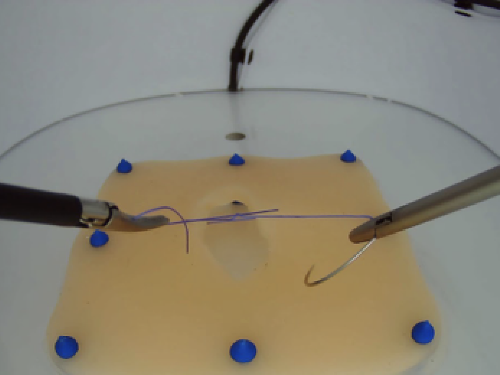

<div class="recording">
  <div class="header">
    <app-header
      [onFinishRecording]="recording"
      [onScreenShot]="isScreenShot"
    ></app-header>
  </div>

  <div class="recording__image">
    
  </div>

  <div
    class="recording__button"
    [ngClass]="{ 'recording__button-bg': isScreenShot }"
  >
    <div class="recording__button--camera">
      <button type="button" class="cameraBtn" (click)="takeScreenShot()">
        
      </button>
      <p class="screenShotText" *ngIf="isScreenShot">
        {{ 'recordingPage.screenShotText' | translate }}
      </p>
    </div>

    <div class="recording__button--finish">
      <button
        type="button"
        class="button button-big button-fill"
        *ngIf="!isScreenShot"
        (click)="onFinish()"
      >
        {{ 'recordingPage.finishRecording' | translate }}
      </button>

      <div class="recording__button--group" *ngIf="isScreenShot">
        <button class="button button-small button-outline" (click)="onRetry()">
          {{ 'recordingPage.retry' | translate }}
        </button>
        <button class="button button-small button-fill" (click)="onDone()">
          {{ 'recordingPage.done' | translate }}
        </button>
      </div>
    </div>
  </div>
</div>
